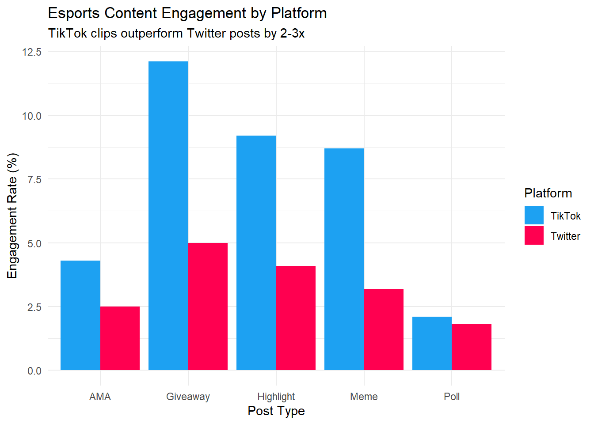

# Load required package
library(ggplot2)
# Simulated engagement data
social_data <- data.frame(
Platform = c(rep("Twitter", 5), rep("TikTok", 5)),
Post_Type = rep(c("Meme", "Highlight", "Poll", "AMA", "Giveaway"), 2),
Engagement_Rate = c(3.2, 4.1, 1.8, 2.5, 5.0, 8.7, 9.2, 2.1, 4.3, 12.1)
)
# Plot
ggplot(social_data, aes(x = Post_Type, y = Engagement_Rate, fill = Platform)) +
geom_bar(stat = "identity", position = "dodge") +
labs(
title = "Esports Content Engagement by Platform",
subtitle = "TikTok clips outperform Twitter posts by 2-3x",
x = "Post Type",
y = "Engagement Rate (%)"
) +
theme_minimal() +
scale_fill_manual(values = c("#1DA1F2", "#FF0050")) # Twitter blue + TikTok red